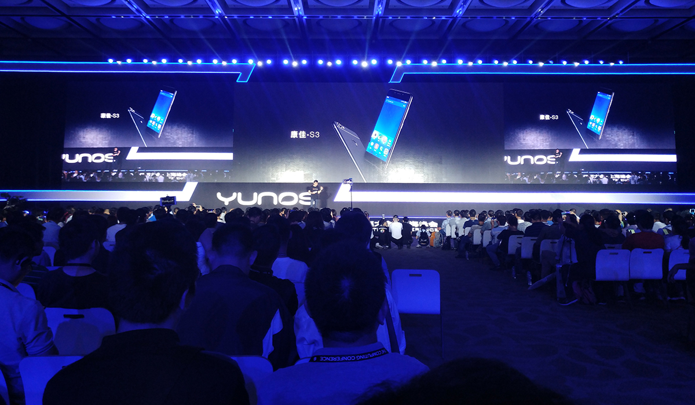
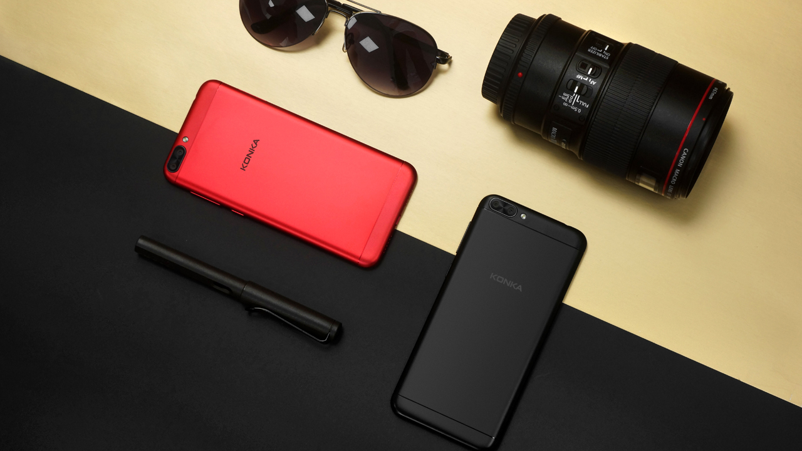
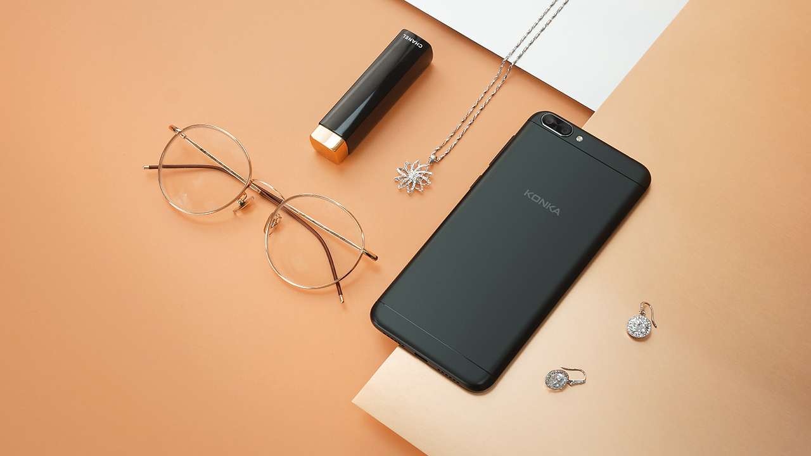

6月10日，2017 YunOS开发者大会在上海如期召开，作为本年度最为重要的云栖大会之一，2017 YunOS开发者大会分论坛设置达20余场，共计有3000余名开发者参会。
作为YunOS战略合作伙伴，康佳手机应邀参会，康佳手机CEO付曼青出席会议。会上，付总一再表示了对YunOS未来发展的信心，康佳手机将与YunOS一起共同打造差异化产品，持续演进YunOS 6，为5G时代的到来做好准备。
与此同时，康佳S3在大会上进行了亮相，YunOS CPO安勇展示YunOS 6新特性的同时，推荐了新上市的康佳手机新品S3。阿里巴巴集团技术委员会主席王坚博士现场使用机器亦为康佳S3赤焰红版。

据悉，康佳S3已于5月底在渠道上市。作为康佳手机暑期诚意之作，康佳S3配备5.2英寸高清大屏，配合最新柔光护眼技术，有效滤除蓝光，画面清晰不伤眼。金属一体式机身，整机厚度仅6.9 mm，纤细超薄，握感舒适。后置双摄，主摄像头为1300万像素Largan镜头、搭载三星sensor，支持PDAF快速对焦，不仅在拍摄时能很好地虚化背景、突出主体，而且能在被摄主体运动过程中快速对焦，对于摄影小白来说是不错的选择。更有基于YunOS深度定制而成的KK美拍、拍立淘等功能，使用贴心又炫酷。目前，S3已在全国各地火热售卖中。

康佳手机，工匠精神。做有体验的产品，一直都是康佳手机坚持的方向。无论是以往上市的R1、E1，还是如今上市的S3亦或是后续的一系列产品，康佳手机都会秉持精益求精的态度，努力打造让用户满意的产品。
收起